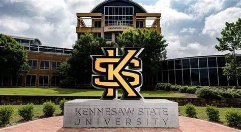

|
Openings
Multiple RA positions are available for PhD, MS, and UG students.
I am looking for PhD, Master's, and undergraduate students with a strong motivation towards academic excellence to join my research team through multiple RA positions.
Research experience in the following areas is particularly preferred:
- Systems and infrastructure for wireless and multi-modal sensing
- Applied AI for Smart and Connected Health
If you are interested, please email me (zxie1@kennesaw.edu) with the following information:
- Statement of interest (detailing your background, research interests, and how joining my research team aligns with your goals and can create potential synergies),
- CV, and
- Transcripts
Qualification:
- Proactive mindset (e.g., thoughtfully justifying proposed ideas, effectively planning and prioritizing tasks, and actively seeking help and feedback)
- Effective communication
- Strong execution capability, with good programming skills and hands-on ability
PhD Admission Requirement:
- For international students, the suggested TOEFL from the department is beyond 80 (or IELTS>=6.5) and the GRE is optional.
- For more details, see here:
Resources Provided:
- RA (Full scholarship funding for PhD or
Thesis track Master)
- Sufficient computing resources
- Comprehensive guidance and advice
- Support for attending domestic/international academic conferences
University Introduction:

Kennesaw State is a Carnegie-designated doctoral research institution (R2),
placing it among an elite group of only 7 percent of U.S. colleges and universities with an R1 or R2 status.
Kennesaw State is a member of the University System of Georgia with 11 academic colleges.
A leader in innovative teaching and learning, Kennesaw State University offers undergraduate,
graduate and doctoral degrees to its more than 47,000 students.
The university’s vibrant campus culture, diverse population, strong global ties and entrepreneurial spirit draw students from throughout the country and the world.
For more information, visit kennesaw.edu.
|